사당역 11번 출구 도보 2~3분 · 3D 포트폴리오 전문 학원
나다운 포트폴리오를 만드는 3D 포트폴리오 전문 학원, 다워라 그래픽 아카데미
1:1 과외식 시스템, 실시간 현장 교육 및 피드백, 장비와 지정석 제공. 유행을 따르거나 뻔한 스타일이 아닌, 한 사람에게 맞춘 포트폴리오를 기획하고 완성까지 함께합니다.
- 오시는 길 사당역(2·4호선) 11번 출구 도보 2~3분
- 운영시간 10:00 ~ 21:00 · 주말 13:00 ~ 17:00
- 수강 시작 개강일 없이 희망하는 날짜에
다워라는
다워라는 포트폴리오 중심의 그래픽 아카데미입니다.
작품과 학생에게만 초점을 맞춘 교육
다워라는 작품과 학생에게만 초점을 맞춘 교육을 진행합니다. 그래픽 교육업계 최초로 1:1 과외식 수업을 원칙으로 운영되고 있는 기관으로써 여러분의 목표를 이루는데 큰 보탬이 되기 위해 언제나 노력하고 있습니다.
더 나은 포트폴리오를 만들어보자는 목적의 소규모 그룹으로 시작한 다워라는 개인에게 적합한 포트폴리오를 기획, 그에 맞는 맞춤형 커리큘럼을 제시하고 상응하는 퀄리티 높은 결과물로 업계와 학생들에게 인정받고 있습니다.
수강생 모두가 다양한 업계, 다양한 파트로 뻗어나가 각자의 자리에서 인정받는 그래픽 디자이너가 될 수 있길 바라고 있습니다.
학생 작품 547개
사이트 WORK 게시판 기준기초 3개월
통합 기초 과정포트폴리오 평균 4~12개월
개인별 작업 성향과 능숙도에 따라포폴 완성률 수강생 기준 98%에 육박
학원 표기
커리큘럼
늘어진 기초교육을 3개월로 줄이고, 빠르게 포트폴리오반으로. 포트폴리오 과정은 4분야, 100% 대면 · 실시간 현장 피드백으로 진행합니다.
-
통합 기초 과정
이런 분께
- 비전공자여서 정보를 얻을 방법이 전무한 분
- 유튜브와 온라인 강의로 독학하다가 혼자서는 답을 찾지 못한 분
배우는 것 3D 모델링/텍스처링 · 하이폴리곤 스컬핑 · 리깅/애니메이션 · 라이팅/렌더링 · 언리얼 엔진 기초 환경 제작 · 언리얼 엔진을 활용한 영상 제작
통합 기초 과정 자세히 보기 -
3D 애니메이션
이런 분께
- 혼자서 작품을 준비했지만 완성이 되지 않는 분
- 캐릭터가 생동감 있게 움직이는, 나만의 스토리가 있는 작품을 만들고 싶은 분
과정 컨셉 기획 → 어셋 모델링 → 텍스처링 → 리깅 → 카메라 세팅 → 애니메이션/다이나믹스 → 라이팅/렌더링 → 합성·편집
3D 애니메이션 과정 자세히 보기 -
VFX
이런 분께
- 영화, 애니메이션, 광고, 게임 업계 취업 희망
- 실사 촬영본에 3D를 입히는 작품의 실무 공정을 배우고 싶은 분
특화 단계 카메라 트래킹(실사 합성) · 프랍 배치 · 실사 촬영 현장과의 라이팅 매칭 · 실사 촬영본 합성
VFX 과정 자세히 보기 -
모션그래픽
이런 분께
- 광고, 전시 업계 취업 희망
- 감각적인 제품 영상 제작의 실무 공정, 모션에 퀄리티까지 더한 작품
특화 단계 제품 모델링 · 질감 및 재질 표현 · 카메라 애니메이션
모션그래픽 과정 자세히 보기 -
언리얼엔진
이런 분께
- 영화, 애니메이션, 광고, 전시, 게임 업계 취업 희망
- 언리얼엔진으로 커리어 능력치를 더 높이고 싶은 분
특화 단계 언리얼엔진 재질 · 메타휴먼 인체 모델링·리깅 · 시네마틱 카메라 · 언리얼 엔진 라이팅
언리얼엔진 과정 자세히 보기
커리큘럼 전체 보기 다루는 프로그램 — 마야(Maya) · 지브러시(ZBrush) · 언리얼 엔진 5 · 시네마 4D(C4D) · 블렌더(Blender)
학생 작품
WORK 게시판에 올라온 학생 작품 547개. 그중 세 사람의 지면을 펼칩니다.
작품 색인
최근 학생 작품 20 — 작품명 · 학생 · 분야
- 우리 동네 언리얼 대장유나영언리얼엔진
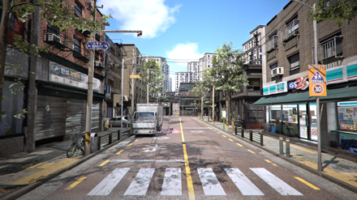
- 검은 수녀들김윤하모션그래픽
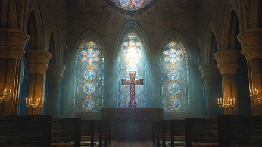
- 나는 곧 좀비가 된다.윤준혁에셋 · 룩뎁
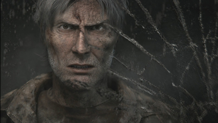
- 내 달걀 내 곁에장예지애니메이션 · 에셋
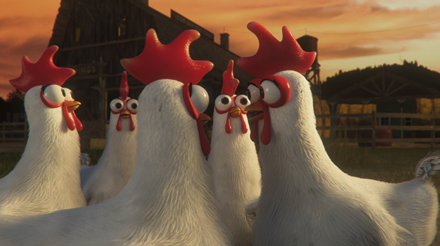
- 화성에 상륙해 버린 롯데리아오소영모션그래픽
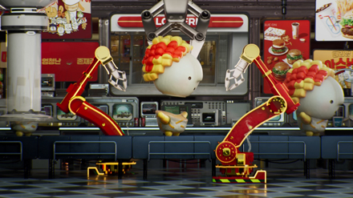
- The Hunter김승연언리얼엔진
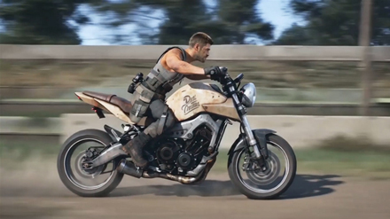
- 리썰 컴퍼니X대탈출김모예에셋 · 룩뎁
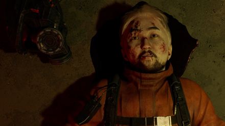
- 과욕의 끝박효은모션그래픽
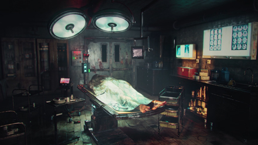
- FINCH - The Resistance채어진에셋 · 언리얼엔진
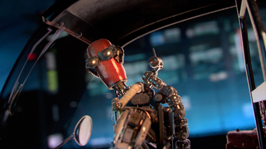
- A L I E N김유림모션그래픽
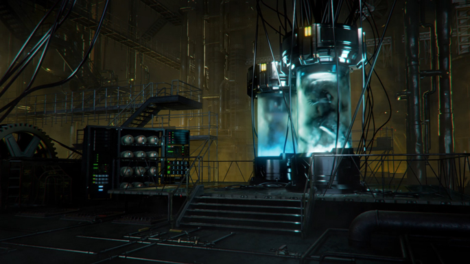
- For honor, For Country황병창에셋 · 언리얼엔진
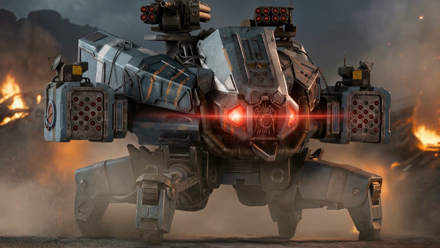
- The Drifter오서경모션그래픽
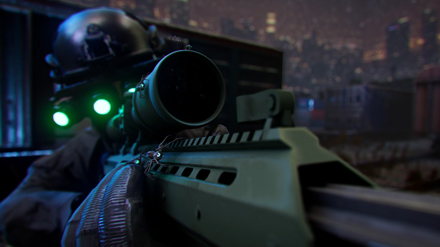
- 최장신 애니메이터의 작품이건화애니메이션
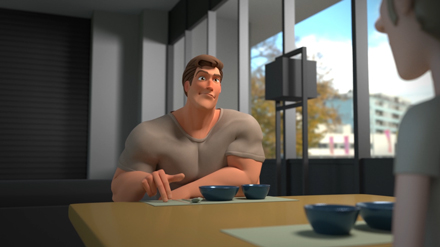
- rhode 갖고 싶다김윤하모션그래픽
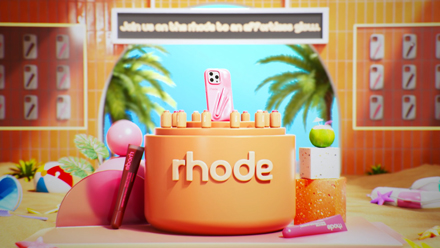
- 기생충 (PARASITE)류하진에셋 · 룩뎁
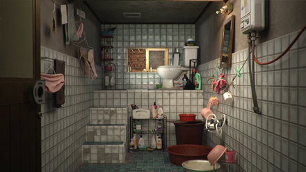
- 경복궁 향원정 맵류현주언리얼엔진
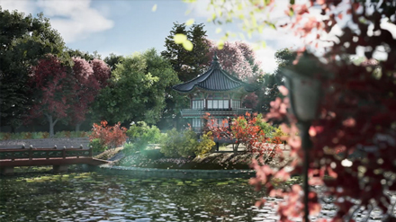
- Continue?김도연룩뎁 · 언리얼엔진
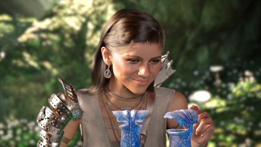
- 나에게도 드디어 친구가..?박선하언리얼엔진
- 우리는 모르는 미스테리한 이야기김예린애니메이션 · 에셋 · 언리얼엔진
- 내가 왕년에 말이야..박지우애니메이션
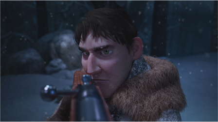
다워라만의 8가지 강점
틀에 짜인 수업 대신, 한 사람의 작품에 필요한 모든 것을.
1:1 과외식 개별수업
틀에 짜인 커리큘럼이 아닌, 작품과 관련해서 본인에게 필요한 모든 교육을 1:1 개별수업으로 매일 진행합니다.
교육을 위해 강사진이 매일 상주
파트타임식의 외부 강사가 아닌, 사명감을 가진 강사진들이 수강생의 기획부터 완성까지 매일 함께 상주하며 같이 고민하고 지도합니다.
작업을 위한 개인 지정석과 컴퓨터 제공
오프라인 교육 시 본인 지정석과 개인 컴퓨터를 제공합니다. 주 5회 및 주말(토요일)까지 자유롭게 작업할 수 있습니다.
실시간 개인 맞춤 피드백
작업 시 발생하는 변수들을 실시간으로 해결할 수 있도록 개인 맞춤 피드백을 매일 현장과 온라인으로 지도합니다.
수업한 영상 평생 소장
1:1로 교육한 강의 영상 및 자료들은 언제든 다시 볼 수 있도록 평생 소장으로 제공합니다.
유동적인 커리큘럼 시스템
대학생과 취업준비생 뿐만 아니라 직장인과 유학생 등 개별 상황에 맞춘 커리큘럼을 짜서 오프라인과 온라인 수업을 진행합니다.
미친 완성률과 높은 취업률
포폴 완성률은 수강생 기준 98%에 육박합니다.
실무적인 수업 방식으로 완성기간 단축
늘어진 기초교육을 3개월로 줄이고 빠르게 포폴반으로 들어와 실무 스킬로 교육합니다. 학원은 타기관 대비 6개월 이상 포폴 완성 기간이 단축된다고 밝힙니다.
수강 후기
수강생이 직접 남긴 글에서 옮겼습니다.
“유행을 따르거나 뻔한 스타일이 아닌, 개인에게 딱 맞는 개성 있는 포트폴리오를 만들 수 있습니다.”
“비전공자에 아무런 지식 없이 가서 이번에 제네럴 포폴 완성했습니다. 막상 가면 정말 감탄만 나와요. 저걸 내가..?? 근데 되더라구요 전 오리 친구를 만들었습니다.”
“제가 느낀 다워라는 포폴 심폐소생술 학원입니다..”
김O빈 수강생
“마야로 시작했지만 처음 접하는 언리얼도 쌤들께 알차게 배우고 포폴까지 완성해서 뿌듯했어요.”
박O하 수강생
“학원에 계신 선생님들의 특성이 다 다르셔서 다방면으로 피드백 받을 수 있다는 점이 제게는 또 큰 장점으로 다가왔던것 같아요”
조O경 수강생
“네 분의 선생님께서 다양한 시선으로 피드백을 해주셔서 좋았습니다.”
이O한 수강생
“작업 중 막히는 부분을 선생님들께 바로바로 피드백 받을 수 있는 시스템이 넘 좋았어요”
노O현 수강생
“여기저기 옮겨다니면서 포트폴리오를 완성하지 못한 채 시간만 보냈는데 다워라에 오고나서야 드디어 포트폴리오를 완성하고 졸업하게 되었습니다.”
다워라 졸업생
자주 묻는 질문
상담에서 가장 많이 받는 질문 열한 가지.
Q11대1 수업은 어떤 방식으로 진행되나요?
쉽게 말해 일반 과외식이라고 생각하면 됩니다. 선생님이 바로 옆에서 개별지도 해주는 시스템으로 수강생의 이해도와 학습 능력에 맞춰 교육이 이루어 집니다.
Q2국민 취업 지원 제도로 등록이 가능한가요?
학원을 다니는 기간을 구직 활동 기간으로 인정하기 때문에 많은 학생들이 국민취업지원제도의 "구직촉진수당 신청"을 통해서 학원 등록 시에 지원을 받고 있습니다. 필요한 서류들은 학원에서 모두 지원하고 있습니다.
Q3포트폴리오 과정은 얼마나 걸리나요?
개인별 작업 성향과 능숙도에 따라 차이가 있으며, 평균 4~12개월 소요가 됩니다. 본원이 처음인 수강생분들은 보통 2~3달 정도의 기간이 더 소요되는 편입니다.
Q4개강일이 따로 없는 것 같은데, 수강 등록은 어떻게 진행되나요?
다워라는 개강날짜가 없습니다. 인원제한을 두고 1대1로 교육하는 방식이라 본인이 희망하는 날짜에 맞춰 수강이 시작되며, 지정석으로 운영하기 때문에 자리가 없으면 예약을 먼저 한 후 차후에 수강 등록이 이뤄집니다.
Q5포트폴리오 전문 학원이면 기초가 없는 사람은 수강이 안되나요?
당연히 수강 가능합니다. 6개월이상 소요되는 일반적인 커리큘럼 과정을 다워라에서는 3개월 기초과정으로 핵심만 공략해서 교육을 합니다. 기초과정 수료 후 본격적인 포트폴리오 제작과정으로 넘어가게 됩니다.
Q6나이가 많아서 걱정인데, 나이 제한이 있나요?
10년 넘게 취업준비생들을 교육해 본 결과 20~34살까지는 무난히 취업에 성공했습니다. 포트폴리오는 좋은데 나이가 많다거나 적어서 손해를 본 경우는 겪어 보지 못했습니다.
Q7이미 타학원을 수료 후 진행하고 있는 포트폴리오 작업도 도움을 받을 수 있나요?
작업물에 관해서는 그 어떤 제한이나 예외없이 무조건 도움받을 수 있는 케어시스템으로 운영되고 있습니다.
Q8개인사정으로 스케줄이 중구난방인데도 교육을 받을 수 있나요?
정해진 시간에 수업받는게 아닌 본인의 스케줄에 맞춰서 필요할 때 마다 수업을 받는 방식입니다.
Q9해외 취업 및 유학을 준비 중입니다.
유학 준비생들을 위해 툴에 대한 능숙도와 실력을 가늠해 볼 수 있을 수준에 중점을 두고, 결과물들의 비중을 잘 배분해서 최적화된 교육을 하고 있습니다.
Q10미술 관련 전공자가 아니면 배우기 힘들다는데, 사실인가요?
절대로 그렇지 않습니다. 미술, 디자인, 조소, 그래픽 관련 공부를 하지 않고 취업한 분들이 절반 이상 입니다.
Q11수강료 납부 방식과 환불 규정은 어떻게 되나요?
매달 납부를 원칙으로 하며, 환불은 교육청 학원법을 준수하고 있습니다.
찾아오는 길 · 상담
개개인의 상황에 맞춰 진심을 담아 다워라 원장선생님이 직접 상담합니다. 전화나 카카오톡으로 방문 상담을 예약해주세요.
주소
서울 서초구 방배천로4안길 20, 3층리에또 건물 3층 · 건물 뒤편에 3층 입구
찾기 쉬운 검색어 — 서울 서초구 프라임빌 2차(방배천로4길 15-22)
오는 길
사당역(2·4호선) 11번 출구에서 도보 2~3분. 바나프레소 골목에서 직진 후 함평육회 골목으로 진입하여 100m 직진.
운영시간
- 평일
- 10:00 ~ 21:00
- 주말
- 13:00 ~ 17:00
- 전화 상담
- 오전 10시 ~ 오후 10시
수강 시작
개강일이 없습니다. 인원 제한을 두고 1:1로 교육해 희망하는 날짜에 맞춰 시작하며, 지정석이라 자리가 없으면 예약 후 등록합니다.
상담 · 문의
- 대표전화02-558-7518
- 휴대폰010-5551-7518
- 이메일dawera_cg@naver.com
- 카카오톡오픈채팅으로 상담 예약
- 온라인문의하기 게시판